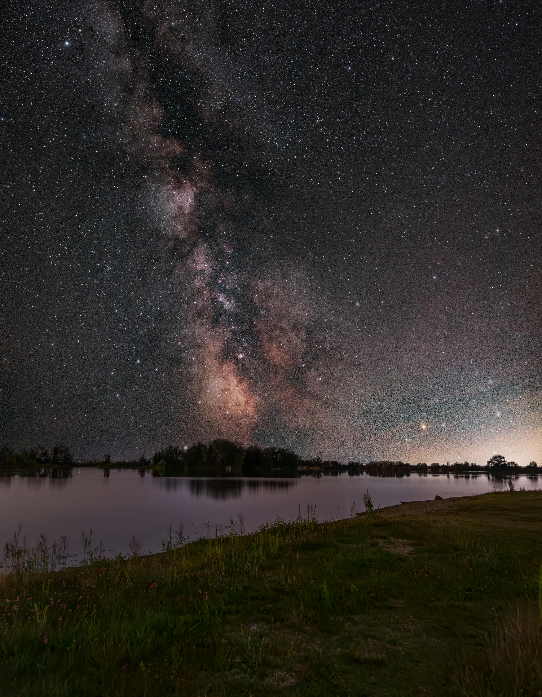
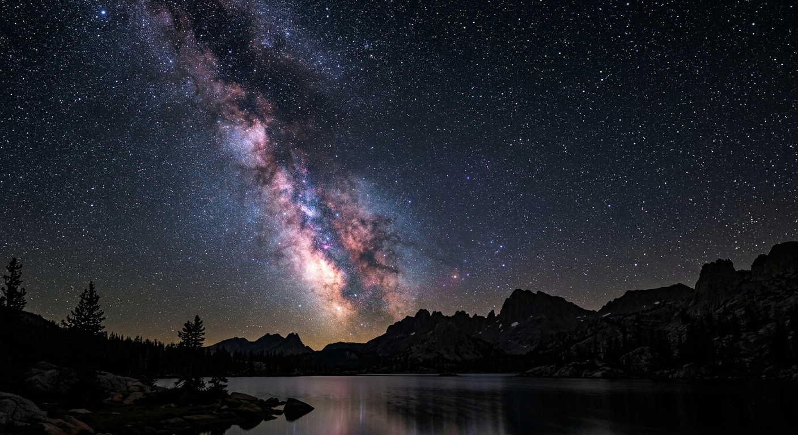
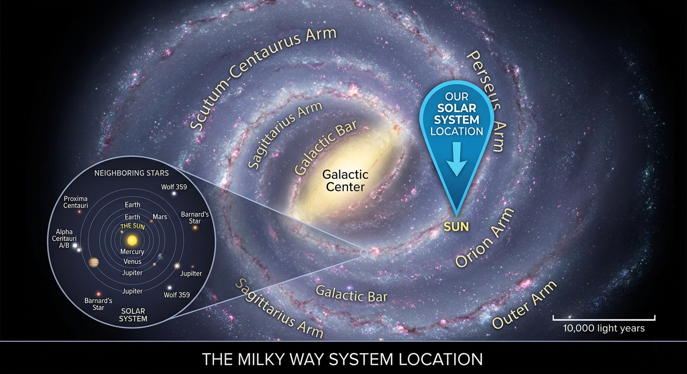

Welcome to the Milky Way
The Milky Way is our home galaxy: a huge collection of stars, planets, gas, and dust. Our Sun is just one of hundreds of billions of stars orbiting its centre.
If you could travel at the speed of light, it would still take about 100,000 years to cross the Milky Way from one side to the other.

How is the Milky Way structured?
Spiral arms
The Milky Way is a barred spiral galaxy. Its spiral arms are regions where stars and planets form from clouds of gas and dust.
Our place in the galaxy
Our Solar System sits in a minor arm called the Orion Arm, about two thirds of the way out from the galactic centre.
Did You Know?
The Milky Way is moving through space at over 2.1 million km/h.
Our galaxy contains more than 100-400 billion stars.
The Milky Way will collide with the Andromeda Galaxy in about 4.5 billion years.
Milky Way Over the Horizon

Why the Milky Way Matters
Understanding the Milky Way helps scientists learn how galaxies form, how stars are born, and how our Solar System fits into the larger universe.
Where Are We in the Galaxy?
Our Solar System sits inside a small region called the Orion Arm, about two-thirds of the way from the galactic center.

Explore the planets
The Milky Way contains countless planetary systems. One of them is our own Solar System.
Watch: A journey through the galaxy
This short video gives an overview of our galaxy.
Video summary
The video shows a zoom-out from Earth to the Solar System, then to the Milky Way galaxy.